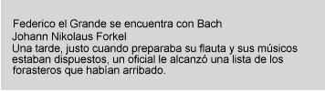

Contenidos
En esta guía, le mostraremos cuán fácil puede ser diseñar unas simples hojas de estilo. Para esta guía, necesitará saber un poco del código HTML (ver [HTML40]) y alguna terminología básica de composición gráfica.
Comenzamos con un pequeño documento HTML:
<!DOCTYPE HTML PUBLIC "-//W3C//DTD HTML 4.0//EN">
<HTML>
<HEAD>
<TITLE>La página de Bach</TITLE>
</HEAD>
<BODY>
<H1>La página de Bach</H1>
<P>Johann Sebastian Bach fue un prolífico compositor.
</BODY>
</HTML>
Para establecer el color azul para el texto de los elementos H1, puede escribir la siguiente regla CSS:
H1 { color: blue }
Una regla CSS consta de dos partes principales: un selector ('H1') y una declaración ('color: blue'). La declaración tiene dos partes: una propiedad ('color') y un valor ('blue'). Con tal que el ejemplo anterior intente influir en una sola propiedad necesaria para el procesamiento de un documento HTML, ya lo califica como una hoja de estilo en sí mismo. Combinado con otras hojas de estilo (un rasgo fundamental de CSS es que las hojas de estilo se combinan) determinará la presentación final del documento.
La especificación HTML 4.0 define de qué manera las reglas de las hojas de estilo pueden especificarse para los documentos HTML: ya sea dentro del documento HTML o a través de una hoja de estilo externa. Para poner la hoja de estilo dentro del documento, use el elemento STYLE:
<!DOCTYPE HTML PUBLIC "-//W3C//DTD HTML 4.0//EN">
<HTML>
<HEAD>
<TITLE>La página de Bach</TITLE>
<STYLE type="text/css">
H1 { color: blue }
</STYLE>
</HEAD>
<BODY>
<H1>La página de Bach</H1>
<P>Johann Sebastian Bach fue un prolífico compositor.
</BODY>
</HTML>
Para una mayor flexibilidad, recomendamos que los autores especifiquen hojas de estilo externas; ellas pueden cambiarse sin modificar el documento fuente HTML y pueden compartirse entre varios documentos. Para vincular una hoja de estilo externa puede usar el elemento LINK:
<!DOCTYPE HTML PUBLIC "-//W3C//DTD HTML 4.0//EN">
<HTML>
<HEAD>
<TITLE>La página de Bach</TITLE>
<LINK rel="stylesheet" href="bach.css" type="text/css">
</HEAD>
<BODY>
<H1>La página de Bach</H1>
<P>Johann Sebastian Bach fue un prolífico compositor.
</BODY>
</HTML>
El elemento LINK especifica:
Para mostrar la íntima relación entre una hoja de estilo y el sistema estructurado de marcas, continuamos usando el elemento STYLE en esta guía. Agreguemos más colores:
<!DOCTYPE HTML PUBLIC "-//W3C//DTD HTML 4.0//EN">
<HTML>
<HEAD>
<TITLE>La página de Bach</TITLE>
<STYLE type="text/css">
BODY { color: red }
H1 { color: blue }
</STYLE>
</HEAD>
<BODY>
<H1>La página de Bach</H1>
<P>Johann Sebastian Bach fue un prolífico compositor.
</BODY>
</HTML>
La hoja de estilo contiene ahora dos reglas: la primera establece el color del elemento BODY como 'red' , en tanto la segunda coloca el color del elemento H1 en 'blue'. Como no se ha especificado ningún valor para el color del elemento P, éste heredará el color de su elemento padre, es decir, BODY. El elemento H1 también es un elemento hijo de BODY pero la segunda regla reemplaza el valor heredado. En CSS existen a menudo tales conflictos entre diferentes valores y esta especificación describe cómo resolverlos.
CSS2 tiene más de 100 propiedades diferentes, incluyendo 'color'. Veamos algunos otros:
<!DOCTYPE HTML PUBLIC "-//W3C//DTD HTML 4.0//EN">
<HTML>
<HEAD>
<TITLE>La página de Bach</TITLE>
<STYLE type="text/css">
BODY {
font-family: "Gill Sans", sans-serif;
font-size: 12pt;
margin: 3em;
}
</STYLE>
</HEAD>
<BODY>
<H1>La página de Bach</H1>
<P>Johann Sebastian Bach fue un prolífico compositor.
</BODY>
</HTML>
Lo primero que se puede observar es que varias declaraciones se agrupan en un bloque encerrado por llaves ({...}) y separado por un punto y coma, no obstante la última declaración también debe estar seguida por un punto y coma.
La primera declaración en el elemento BODY establece la familia de fuentes "Gill Sans". Si esa fuente no está disponible, la aplicación del usuario (a menudo llamada "browser" o navegador) usará la familia 'sans-serif' que es una de las cinco familias de fuentes genéricas que todas las aplicaciones del usuario reconocen. Los elementos hijos de BODY heredarán el valor de la propiedad 'font-family'.
La segunda declaración establece el tamaño de la fuente del elemento BODY en 12 puntos. La unidad de medida "punto" es normalmente usada en la tipografía impresa para indicar el tamaño de la fuente y otras dimensiones. Es un ejemplo de unidad de medida absoluta que no varía según el entorno.
La tercer declaración usa una unidad de medida relativa que varía de acuerdo a las circunstancias. La unidad "eme" está relacionada con el tamaño de la fuente del elemento. En este caso el resultado es que el margen alrededor del elemento BODY es tres veces mayor que el tamaño de la fuente.
CSS puede usarse con cualquier formato de documento estructurado, por ejemplo con aplicaciones del eXtensible Markup Language [XML10]. De hecho, XML depende más de las hojas de estilo que HTML puesto que los autores pueden construir elementos propios que las aplicaciones del usuario no saben como mostrar.
Este es un simple fragmento en XML:
<ARTICULO>
<TITULO>Federico el Grande se encuentra con Bach</TITULO>
<AUTOR>Johann Nikolaus Forkel</AUTOR>
<PARRAFO>
Una tarde, justo cuando preparaba su <INSTRUMENTO>flauta</INSTRUMENTO>
y sus músicos estaban dispuestos, un oficial le alcanzó una lista
de los forasteros que habían arribado.
</PARRAFO>
</ARTICULO>
Para que este fragmento sea visualizado a modo de un documento, debemos declarar primero cuáles son los elementos a nivel de línea (es decir, que no dan lugar a saltos de líneas) y cuáles son a nivel de bloque (es decir, que producen saltos de línea).
INSTRUMENTO { display: inline }
ARTICULO, TITULO, AUTOR, PARRAFO { display: block }
La primer regla declara que INSTRUMENTO será a nivel de línea y la segunda regla, con su lista de selectores separados por comas, declara que todos los demás elementos serán a nivel de bloque.
Una de las ideas de vincular una hoja de estilo a un documento XML es emplear una instrucción de procesamiento:
<?XML:stylesheet type="text/css" href="bach.css"?>
<ARTICULO>
<TITULO>Federico el Grande se encuentra con Bach</TITULO>
<AUTOR>Johann Nikolaus Forkel</AUTHR>
<PARRAFO>
Una tarde, justo cuando preparaba su <INSTRUMENTO>flauta</INSTRUMENTO>
y sus músicos estaban dispuestos, un oficial le alcanzó una lista
de los forasteros que habían arribado.
</PARRAFO>
</ARTICULO>
Una aplicación del usuario visual dará este formato al ejemplo anterior:
 [D]
Observe que la palabra "flauta" permanece dentro del párrafo debido a que es el contenido del elemento a nivel de línea INSTRUMENTO.
Pero aún el texto no tiene el formato que se podría esperar. Por ejemplo, el tamaño de la fuente del título debería ser mayor que la del resto del texto y quizás se prefiera mostrar el nombre del autor en itálica:
INSTRUMENTO { display: inline }
ARTICULO, TITULO, AUTOR, PARRAFO { display: block }
TITULO { font-size: 1.3em }
AUTOR { font-style: italic }
ARTICULO, TITULO, AUTOR, PARRAFO { margin: 0.5em }
Una aplicación del usuario visual dará este formato al ejemplo anterior:
Agregando más reglas a la hoja de estilo le permitirá mejorar aún más la presentación del documento.
Esta sección presenta un posible modelo de cómo trabajan las aplicaciones del usuario que soportan CSS. Este es sólo un modelo conceptual; las implementaciones reales pueden variar.
En este modelo, una aplicación del usuario procesa una fuente atravesando los siguientes pasos:
Una parte del cálculo de los valores depende del algoritmo de procesamiento apropiado para el tipo de medio al que está dirigido. Por ejemplo, si el medio al que se dirige es la pantalla, las aplicaciones del usuario aplican el modelo de composición visual. Si el destino es la página impresa, las aplicaciones del usuario aplican el modelo de página. Si el medio de destino es un dispositivo de procesamiento sonoro (ej., un sintetizador de palabras), las aplicaciones del usuario aplican el modelo de procesamiento auditivo.
Observe que las aplicaciones del usuario CSS no alteran la estructura del documento durante esta fase. En particular, el contenido generado por causa de las hojas de estilo no es enviado nuevamente al procesador del lenguaje del documento (ej., para un nuevo análisis).
El paso 1 está fuera del alcance de esta especificación (ver, por ejemplo, [DOM]).
Los pasos 2-5 son tratados en el cuerpo principal de esta especificación.
El paso 6 está fuera del alcance de esta especificación.
En todos los medios, el término lienzo describe "el espacio donde la estructura del formato es procesada". El lienzo es infinito por cada dimensión del espacio, pero el procesamiento generalmente tiene lugar en una región limitada del lienzo, establecida por la aplicación del usuario de acuerdo con el medio al que está dirigido. Por ejemplo, las aplicaciones del usuario que procesan para pantalla, generalmente imponen un ancho mínimo y eligen un ancho inicial basado en las dimensiones del acceso visual. Las aplicaciones del usuario que procesan una página generalmente imponen restricciones en el alto y el ancho. Las aplicaciones auditivas pueden imponer límites en el terreno del audio, pero no en el tiempo.
|
Nota de la traducción: La traducción de lienzo es literal del inglés "canvas". Por tratarse de un uso metafórico del término, no debe buscarse una relación muy estricta con la idea que describe. |
Los selectores CSS2 y las propiedades permiten a las hojas de estilo referirse a las siguientes partes de un documento o aplicación del usuario:
CSS2, como fue antes CSS1, se basa en una serie de reglas de diseño:
Compatibilidad hacia atrás y hacia adelante. Las aplicaciones del usuario CSS2 serán capaces de entender las hojas de estilo CSS1. Las aplicaciones del usuario CSS1 podrán leer las hojas de estilo CSS2 y descartar las partes que no entienden. Además, las aplicaciones del usuario que no soporten CSS serán capaces de mostrar los documentos estilísticamente mejorados. Por supuesto, el efectos estilísticos hechos posible por CSS no serán procesados, pero todo el contenido será presentado.
Complementariedad con documentos estructurados. Las hojas de estilo complementan los documentos estructurados (ej., HTML y aplicaciones XML) proveyendo información estilística del texto marcado. Debe ser fácil cambiar la hoja de estilo con poco o ningún impacto en el sistema de marcas.
Independencia del vendedor, la plataforma y el dispositivo. Las hojas de estilo permiten a los documentos permanecer independientes del vendedor, la plataforma y el dispositivo. Las mismas hojas de estilo son también independientes del vendedor y la plataforma, pero CSS2 permite dirigir una hoja de estilo a un grupo de dispositivos (ej., impresoras).
Mantenibilidad. Apuntando a una hoja de estilo desde los documentos, los responsables de los sitios en la Web pueden simplificar el mantenimiento y conservar un estilo y un efecto consistente a todo lo largo del sitio. Por ejemplo, si el color del fondo de las páginas de una organización cambia, sólo un archivo necesita ser cambiado.
Simplicidad. CSS2 es más compleja que CSS1, pero sigue siendo un lenguaje de estilo simple que es humanamente legible y posible de escribir. Las propiedades CSS se mantienen independientes unas de otras en la medida de lo posible y generalmente sólo hay un modo de conseguir un efecto determinado.
Rendimiento de la red. CSS proporciona una compacta codificación para presentar los contenidos. Comparado con los archivos de imágenes o de audio que son usados frecuentemente por los autores para conseguir ciertos efectos en el procesamiento, las hojas de estilo, la mayoría de las veces, disminuyen el tamaño del contenido. Además, menos conexiones de la red tienen que ser abiertas, lo cual ayuda a incrementar el rendimiento de la red.
Flexibilidad. Las CSS pueden ser aplicadas al contenido de varias maneras. La característica clave es la capacidad de formar una cascada de estilos con la información especificada en la hoja de estilo predeterminada (aplicación del usuario), las hojas de estilo del usuario, las hojas de estilo vinculadas, el encabezamiento del documento y en los atributos de los elementos que forman el cuerpo del documento.
Riqueza. Proporcionando a los autores un abundante juego de efectos de procesamiento, aumenta la riqueza de la Web como medio de expresión. Los diseñadores han estado ambicionando la funcionalidad comúnmente encontrada en los programas de edición y de presentaciones gráficas. Algunos de los efectos requeridos entran en conflicto con la independencia del dispositivo, pero CSS2 llega muy lejos satisfaciendo las demandas de los diseñadores.
Combinación con lenguajes alternativos. El juego de propiedades de CSS descriptas en esta especificación conforman un sólido modelo de aplicación de formatos para presentaciones visuales y auditivas. Este modelo puede ser accedido mediante el lenguaje CSS, pero la combinación con otros lenguajes también es posible. Por ejemplo, un programa en JavaScript puede cambiar dinámicamente el valor de la propiedad 'color' de un determinado elemento.
Accesibilidad. Varias características de CSS harán a la Web más accesible para los usuarios con discapacidades:
Nota. Para mayor información acerca del diseño de documentos accesibles usando CSS y HTML, por favor, consulte [WAI-PAGEAUTH].
|
Copyright © 1998 W3C (MIT, INRIA, Keio ), All Rights Reserved.
Traducción: Carlos Benavidez |